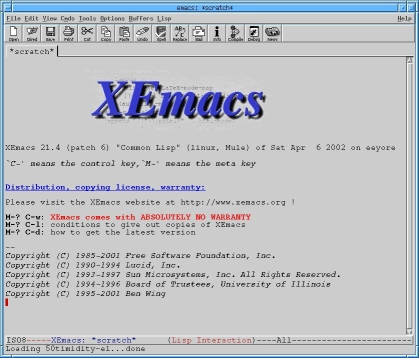
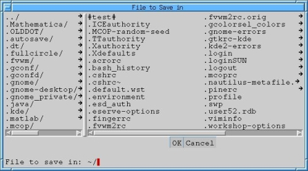
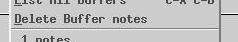

|
|
PREVIOUS Mail, Internet, and More |
NEXT First Program |
|
|
|
PREVIOUS Mail, Internet, and More |
NEXT First Program |
|

Emacs (technically XEmacs) is a text editor, similar in function to a lot of word processing programs that you may have used. It has a ton of features that will help you create and edit programs in CS15. This little tutorial will give you a very basic introduction to creating, editing, and saving files with Emacs, but we are only giving you the very tip of the iceberg. Emacs is a huge program. The Appendix gives you a good list of some common commands and shortcuts, which you should definitely come back to.
This introduction will cover some of the more idiosyncratic elements of Emacs. However, it also has most of the standard functionality you would expect from a text editor, including undo (but no redo, sorry), copy, paste, search, etc. The toolbar at the top of the window has some of the most common functions. Other functions can be found in the pull-down menus. Poke around.
First things first, you can open Emacs by typing xemacs &
in a shell, or by selecting "XEmacs" from the
Root Menu.
 Open Emacs.
Open Emacs.
The Emacs menu bars often make reference to "buffers". Do not be fooled; this is not a reference to a nail file, or machines to make your floor shiny. "Buffer" is another word for document or file in Emacs. Buffers get their name from the fact that they temporarily "buffer" a file by storing your changes to a document, without immediately writing them to a file. Think of it just as the graphical display of your file and the changes you have made to it since saving. While this is useful at times, you will want to be sure that all of your buffers are actually saved into the right files before you log out and lose your changes.
Every time you open Emacs, you will start on a buffer called "*scratch*." As will be printed on top of the buffer as soon as you click on the screen, *scratch* is typically a place for you to put notes as you are working. However, you can save changes you make to scratch.
If you have more than one buffer open, the "Buffers" menu allows you to switch between them. Simply select the one you want to view or edit. The file menu allows you to save buffers to files, or revert (go back to) to the last saved version of a file, erasing all your recent changes.
Sidenote: Keyboard ShortcutsAs you look through the Emacs menus, you will see a bunch of funny symbols next to menu options, like:
These are the keyboard shortcuts for the commands. Emacs uses two
modifier keys:
Anyway, your life will be a lot easier of you learn some keyboard shortcuts. There is a list of the most common shortcuts in the Appendix, but here's a quick rundown of how to read them:
Examples:
|
Before we get you editing files, we'll tell you what to do if you screw up :) This may seem really basic, but some of Emacs' delete behavior is different from that of other programs you may have used. (If you highlight text and just press backspace or delete, you will not delete it!) There are 3 ways to delete text in Emacs.
<Backspace> repeatedly to
remove character-by-character.
<Delete> repeatedly to
remove character-by-character.
<Cut> button on the toolbar, or select
"Cut" from the Edit menu. Note that the text
you removed will now be on your clipboard, and will be pasted
the next time you call paste if you don't copy or cut something
else first.
Typically, you will be editing pre-existing files in Emacs, or you will be opening new ones. However, just to practice a little, we are going to have you modify the *scratch* buffer.
 Type yourself a note in the Emacs window. Specifically, make sure
to include the words "complete" and "compost." (Make sure that
you have your mouse cursor over the Emacs window so it is
active. Don't worry about the Emacs logo, if you start typing,
it will take you to *scratch*.)
Type yourself a note in the Emacs window. Specifically, make sure
to include the words "complete" and "compost." (Make sure that
you have your mouse cursor over the Emacs window so it is
active. Don't worry about the Emacs logo, if you start typing,
it will take you to *scratch*.)
Dynamic expansion will save you a million (exactly one million) errors and mistakes when you start programming (which will be in about 5 minutes--getting excited?). It's a lot like tab completion in the shells, but, in this case, it looks at what you have already written. You activate dynamic expansion with:
M-/
That is <meta> and </> at
the same time. (If you can't find the <meta>
key, go back and read the box on keyboard shortcuts.)
Dynamic expansion will look over what you have already written and
try give you a completion for the characters immediately to the
left of the cursor. If there are multiple possibilities, it
will give you the most recent one, but multiple presses of
M-/ will cycle through all the possibilities.
 Now type the letters "
Now type the letters "com" in your note and
press M-/ a few times to see how the dynamic
expansion works. Pretty neat, huh? (You may see words you haven't
typed, like "compile" come up as you cycle through the options.
That is because Emacs will look at other buffers for a completion
if it can't find one on the current buffer. It has some
setup buffers that might have other words on them. You will see
a message on the lower-left corner of your window if the word was
taken from another buffer.)
To save your current buffer, select
"Save <nameofbuffer>" from the File menu. To save
all of your open buffers, select"Save Some Buffers."
Unless you select "Save As," buffers you got by
opening a pre-existing file will
be saved to their original file. If you save *scratch*, you will
have to give a name.
 Try saving the current buffer, using either the Menu entry
or the Toolbar.
Try saving the current buffer, using either the Menu entry
or the Toolbar.
You should now see this window (called the minibuffer).:

To the left, you have a list of all the directories in the current directory, and the right side displays all of the files in the current directory. If you wanted to switch directories (without just typing the name at the prompt at the bottom), you could click the directory you want with the middle mouse button. If you wanted to save the buffer into one of the files in the current directory (overwriting whatever is currently in that file), click the file's name with the middle mouse button. (All of the files you see that start with a period are configuration files, called "dot files.")
 Move your mouse pointer over the minibuffer and type in
"notes" as the name of the file. When you are finished,
press 'enter.'
Move your mouse pointer over the minibuffer and type in
"notes" as the name of the file. When you are finished,
press 'enter.'
When Emacs successfully saves your file, it will display the message:
Wrote <full path and name of file>
in the lower-left corner of the window.
For the moment, we are done with this file called "notes". In order to remove it from your working environment in Emacs, you must kill or delete it. Killing a buffer will remove it from your Buffer Menu, and you won't be able to edit it until you open it again. Despite the violent name, killing buffers does not delete them from the file system, although you must still make sure to save them before killing.
 Go to the Buffers Menu and select the entry called "Delete Buffer
notes".
Go to the Buffers Menu and select the entry called "Delete Buffer
notes".

The "notes" buffer should be gone, replaced by a *scratch* buffer, which is the default buffer that Emacs always has open.
To create a new file, without using the *scratch* buffer, simply select Open from the menu or toolbar and enter the name you want to give it. Unlike in most word processors you might have used, "Opening" a nonexistent file in Emacs causes it to be created.
This is easy:
 Select "Open" from the file menu or the toolbar.
Select "Open" from the file menu or the toolbar.
You should get a minibuffer with the prompt:
Find file: ~/
By default, Emacs looks for files in the directory where you started the program (your home directory in this case). If you want to open a file somewhere else, you can enter the directory name at the prompt. Emacs supports "tab completion" like the shell windows.
 Type in a unique name for a new file, like "oohlala" and press
'enter.'
Type in a unique name for a new file, like "oohlala" and press
'enter.'
Emacs will tell you this a new file in the bottom left of the frame.
 Type a short message in the new buffer.
Type a short message in the new buffer.
Though this buffer has a name, it is not yet saved. You must explicitly tell Emacs to save the file, or else you could lose it.
 Save this buffer.
Save this buffer.
Since you already told Emacs where this file belongs, it will automatically write it there, without asking where you want to put it. See how this file is now listed in the Buffers menu.
Now, suppose, you would like to take a look at your old file called "notes". Remember that we deleted it before, but that deletion only closes the file in Emacs, the file still exists on the system if it was saved.
 Open your file "notes." (You know it was in your home directory.
Try using tab completion to find it.)
Open your file "notes." (You know it was in your home directory.
Try using tab completion to find it.)
You should now have two real buffers (buffers that correspond to real files) open.
 Try switching around between buffers with the Buffer Menu
or the tabs immediately below the toolbar.
Try switching around between buffers with the Buffer Menu
or the tabs immediately below the toolbar.
Emacs is pretty good at keeping temporary backups of your work, just in case the computer crashes or you accidentally kill the application.
 Add another bit of text to your "notes" buffer.
Add another bit of text to your "notes" buffer.
 Without saving, try to delete the "notes" buffer using the "Buffers"
menu.
Without saving, try to delete the "notes" buffer using the "Buffers"
menu.
Emacs will notify you that, you are trying to kill a buffer that you have changed but not saved. You then have the option of killing it, or canceling. Note: This is not asking you whether you want to save your file; you must do that separately.
You can try to save all of your buffers at once by using the File Menu command, Save Some Buffers. It's a pretty stupid name, but it will save you some time if you have a lot of files that need saving. Select this command and Emacs will ask you if you want to save each file that is not already saved.
|
|
PREVIOUS Mail, Internet, and More |
NEXT First Program |
|